Results
| Experiment | Train | Hold-out | Train PSNR | Val PSNR |
|---|---|---|---|---|
| PTv3 — rotation holdout | 1 scene · 4 envmaps · 3 rotations | 1 rotation | 40.5 | 23.8 |
| PTv3 — envmap holdout | 1 scene · 3 envmaps · 5 rotations | 1 envmap | 41.7 | 29.9 |
| PTv3 — scene+envmap holdout | 5 scenes · 3 envmaps · 5 rotations | 2 scenes + 1 envmap | 32.9 | 22.0 |
| MLP — scene+envmap holdout | 5 scenes · 3 envmaps · 5 rotations | 2 scenes + 1 envmap | 28.5 | 20.9 |
Training curves
PTv3 — rotation holdout
1 scene · 4 envmaps · hold out 1 rotation
PTv3 — envmap holdout
1 scene · 3 envmaps · hold out 1 envmap
PTv3 — scene+envmap holdout
5 scenes · 3 envmaps · hold out 2 scenes + 1 envmap
MLP — scene+envmap holdout
5 scenes · 3 envmaps · hold out 2 scenes + 1 envmap
train PSNR
val PSNR
Renders — noisy | pred | clean
PTv3 — rotation holdout
val PSNR 23.8 dB · held-out rotation 30° · epoch 2100
PTv3 — envmap holdout
val PSNR 29.9 dB · held-out envmap spruit_sunrise · epoch 3000
PTv3 — scene+envmap holdout
val PSNR 22.0 dB · unseen scene + unseen envmap · epoch 2700
MLP — scene+envmap holdout
val PSNR 20.9 dB · unseen scene + unseen envmap · epoch 2300
houses2 — 18 new scenes
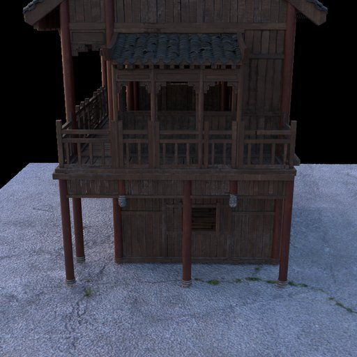
chinese_high_house_wood
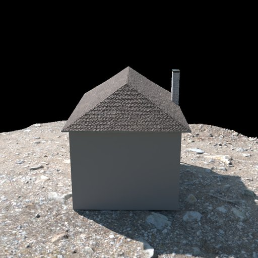
classic_two_story_house
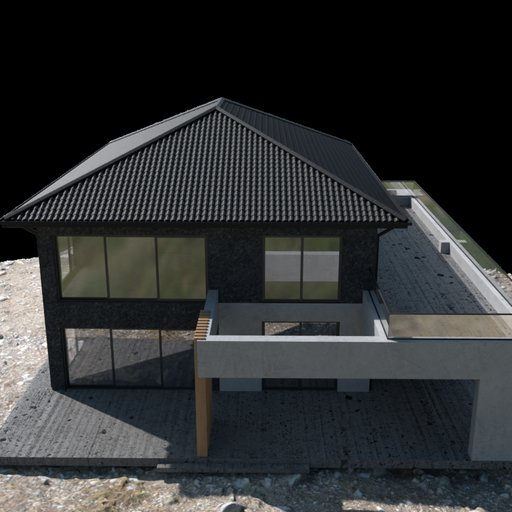
contemporary_house
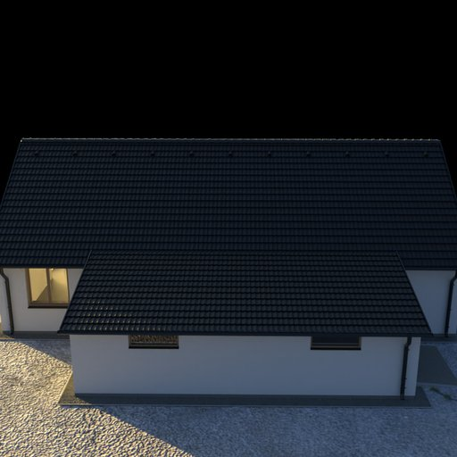
house
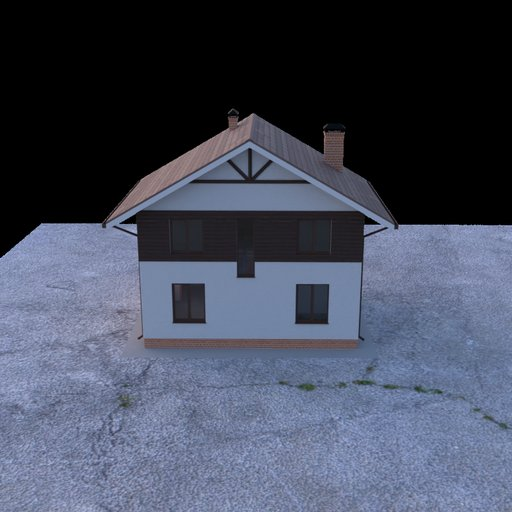
house_kolb
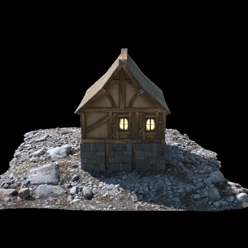
medieval_house
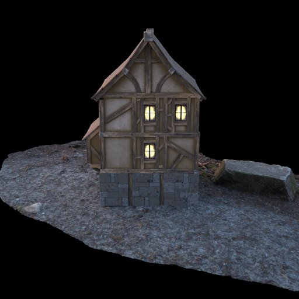
medieval_house_2
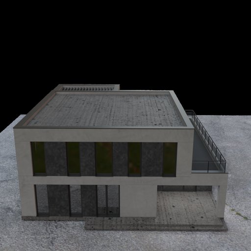
modern_elegance_house
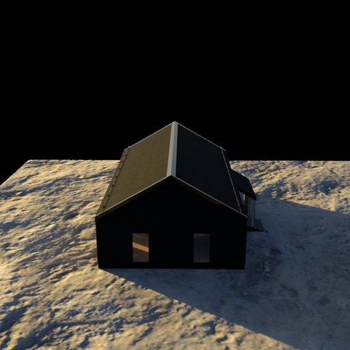
modern_house
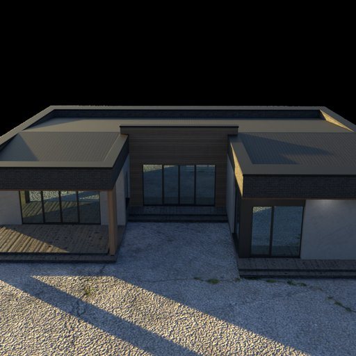
modern_one_story_house
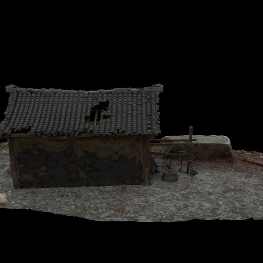
old_chinese_roof_house
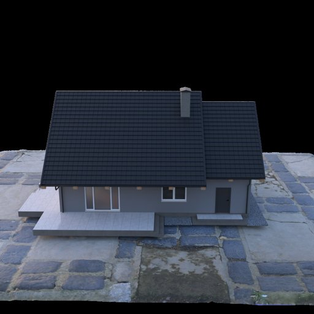
single_family_house
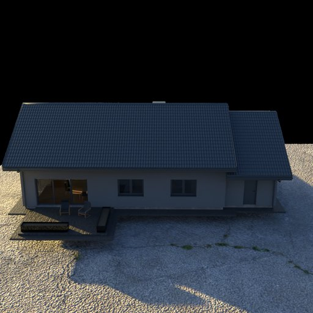
single_family_residential_house
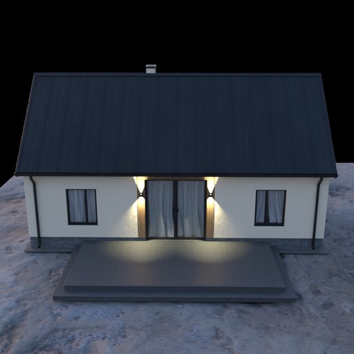
small_house
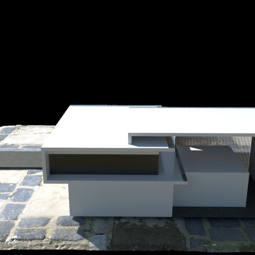
smart_house
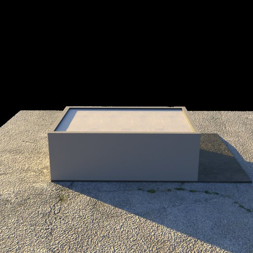
studio_house_6
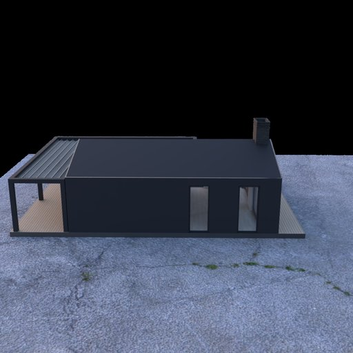
summer_house_a
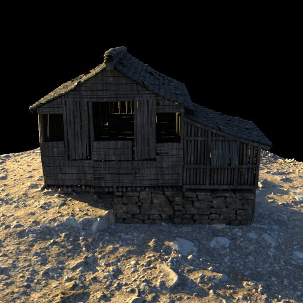
wood_plant_house
Zero-Shot — overview (input | cleaned)
Camera orbit (input | cleaned)
Light rotate (input | cleaned)
Zero-shot vs Fine-tuned — per scene (input | cleaned)
Fine-tuned (W&B run 92nj4rcm · step 1500) — generated only
chinese_ground_small · aarfontein_dirt_road
chinese_ground_small · autumn_field
chinese_ground_small · spruit_sunrise
chinese_ground_small · envmap12
modern_house · autumn_field
shelter · autumn_field
unfinished_building · autumn_field